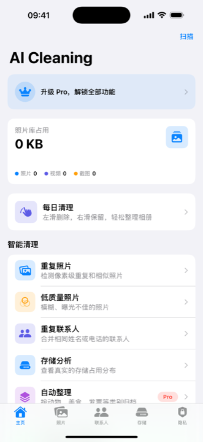

AI照片分类
先把相册分清楚，再决定清理什么。
AI Cleaning 的九类设备端 AI 分类需要 Pro；免费下载不等于免费使用 AI 分类。先按需求选择系统相册或付费分类，再复查重要照片和清理候选。

选择前先看
系统相册、Pro 分类和照片清理分别适合什么任务？
先用系统“照片”的搜索与相簿功能。可按日期、地点或已命名的人物查找，再把需要的照片加入相簿。查看系统相册整理步骤（英文），这一流程不需要 AI Cleaning 订阅。
官方 App Store 将 Auto-Categorize 标为 Pro 功能。应用可以免费下载，九类 AI 分类需要订阅；购买前核对当地商店显示的月度或年度订阅条款。
分类只辅助判断照片内容，不能证明一张照片已经没有价值。不确定的照片先保留；需要处理重复或相似照片时，先看重复照片复查指南。分类、分组与确认删除是不同的操作。
分类优先
AI 照片分类解决的是“找得到”和“看得懂”。
相册清理不只是删除。对中文用户来说，更常见的问题是照片太多、截图太乱、证件和票据不好找。 AI Cleaning 会先把照片整理成更容易查看的类别，让你知道相册里到底有什么。 对于想做苹果手机照片清理的用户，分类是更稳的第一步。
食物、植物、动物、餐厅、合照等类别，适合快速回看日常照片。
票据、发票、证件、文档等照片需要谨慎处理，分类后更容易先确认再清理。
重复照片、相似照片、截图、模糊照片和大文件更适合作为相册整理的第一批检查对象。
如果主要是在 iPad 上整理阅读截图、文档扫描、导入照片和大视频，可以先看 iPad 照片整理指南。
清理流程
不要一键乱删，按类别逐项检查。
一个可靠的 iPhone 照片清理流程，应该先让用户看清分类结果，再给出可检查的清理列表。 这比直接展示一个夸张的“可释放空间”数字更可信。
证件、票据、文档、合照先确认，避免把真正需要保留的照片当成垃圾清理。
重复照片和相似照片适合成组比较，保留更清晰、更完整的一张。
临时截图、模糊照片和大视频通常占空间明显，适合集中整理。
分类之后
看清分类结果，再决定下一步。
AI 照片分类的价值不在于自动清理，而在于让你看清相册里到底有什么。 分类完成后，你可以先检查证件、票据、文档等重要类别是否被正确识别， 再进入重复照片和截图类别做复查。这个过程比直接面对几千张照片要高效得多。
证件、票据、文档和合照先确认，确保 AI 没有把它们误分到可清理类别里。
截图、模糊照片和重复照片通常是最容易释放空间的类别，参考 重复照片清理指南。
大视频和高分辨率照片可能占用大量空间。确认备份后再清理，参考 iPhone 照片清理流程。
常见问题
安装前可以先确认这几点。
AI 照片分类和普通相册搜索有什么区别？
系统“照片”已经支持内容搜索、人物与宠物、相簿及多种分类。AI Cleaning 的九类 Pro 分类把日常主体与文档类别接入清理复查流程；是否需要额外应用，取决于系统功能能否满足你的整理任务。
为什么不建议一上来就删除照片？
相册里可能混有证件、发票、旅行记录、家庭合照等重要内容。先分类再清理，可以降低误删风险。
AI Cleaning 是否适合长期没有整理相册的 iPhone 用户？
适合。它的重点是先理解相册结构，再辅助检查重复照片、截图、模糊照片和大文件，比较适合照片数量多、相册长期没有整理的用户。
照片 AI 分析是否需要上传整本相册？
开发者说明核心照片分析在设备端进行，不上传照片。App Store 隐私标签显示“不收集数据”；Apple 同时注明，这份隐私声明由开发者提供，未经 Apple 验证。
AI 分类会把照片上传到云端吗？
开发者说明核心照片分类在设备端进行，不上传照片；这是开发者对产品工作方式的说明。分类结果仍需用户检查，不能代替对照片内容和保留价值的判断。
分类结果不准确怎么办？
先打开原图检查内容，不要仅凭分类名称决定删除。不确定的证件、票据、文档或回忆照片先保留；分类结果用于辅助复查，不代表照片可以安全删除。